Wapens, gereedschap en munitie
Wapens, gereedschap en munitie in Valheim – 200 voorwerpen met bioom, vindplaats, benodigd gereedschap, recept en gebruik.
Geen voorwerp gevonden.
 Aas
Aas
Doorsnee aas waar de dvergr mee vissen. Hengel apart verkrijgbaar.
Zo kom je eraan
Gebruik
- Ingrediënt voor: Cold Fishing Bait, Frosty Fishing Bait, Heavy Fishing Bait, Hot Fishing Bait, Misty Fishing Bait, Mossy Fishing Bait, Sticky Fishing Bait, Stingy Fishing Bait
- Aas voor: Baars, Snoek
 Arbalest
Arbalest
A slow but powerful weapon.
Zo kom je eraan
 Ash Fang
Ash Fang
Risen again from the ashes, this bow holds unyielding strength.
Zo kom je eraan
- Maken: Black Forge (niveau 3) uit 10 ×
 Ashwood, 16 ×
Ashwood, 16 ×  Charred Bone, 5 ×
Charred Bone, 5 ×  Vlammetaal, 5 ×
Vlammetaal, 5 ×  Bonemaw Tooth · per upgrade: 5 × Ashwood, 10 × Charred Bone, 5 × Vlammetaal, 5 × Bonemaw Tooth
Bonemaw Tooth · per upgrade: 5 × Ashwood, 10 × Charred Bone, 5 × Vlammetaal, 5 × Bonemaw Tooth
Gebruik
- Ingrediënt voor: Blood Fang, Root Fang, Storm Fang
 Basalt Bomb
Basalt Bomb
With enough heat, it solidifies upon explosion.
Zo kom je eraan
- Maken: 5 × Werkbank uit 1 ×
 Asksvin Hide, 1 ×
Asksvin Hide, 1 ×  Asksvin Bladder, 3 ×
Asksvin Bladder, 3 ×  Proustite Powder
Proustite Powder
 Berserkir Axes
Berserkir Axes
Let your rage take over and face the slaughter.
Zo kom je eraan
- Maken: Black Forge (niveau 3) uit 15 × Charred Bone, 24 × Vlammetaal, 3 × Asksvin Hide · per upgrade: 15 × Vlammetaal, 1 × Asksvin Hide
Gebruik
- Ingrediënt voor: Bleeding Berserkir Axes, Primal Berserkir Axes, Thundering Berserkir Axes
 Bierpul
Bierpul
Schol!
Zo kom je eraan
- Maken: Werkbank uit 5 ×
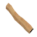
Fijn hout, 2 × Hars
Hars
 Bile Bomb
Bile Bomb
Handle with care.
Zo kom je eraan
 Black Metal Battleaxe
Black Metal Battleaxe
Green shall be the last thing your foes see before you cleave them in half.
Zo kom je eraan
- Maken: Smidse (niveau 4) uit 10 × Fijn hout, 30 ×
 Zwart metaal, 5 ×
Zwart metaal, 5 ×  Linnen draad · per upgrade: 15 × Zwart metaal, 5 × Linnen draad
Linnen draad · per upgrade: 15 × Zwart metaal, 5 × Linnen draad
 Black Metal Bolt
Black Metal Bolt
A sleek bolt of dark metal.
Zo kom je eraan
- Maken: 20 × Black Forge (niveau 2) uit 2 × Zwart metaal, 8 ×
 Hout, 2 ×
Hout, 2 ×  Veren
Veren
 Black Metal Missile
Black Metal Missile
These thick missiles can punch through the hide of even the toughest foes.
Zo kom je eraan
- Maken: 20 × Ambachtstafel uit 10 × Hout, 1 × Zwart metaal
 Black Metal Pickaxe
Black Metal Pickaxe
A good strong pick of glistening dark metal.
Zo kom je eraan
- Maken: Smidse (niveau 2) uit 3 ×
 Yggdrasil Wood, 25 × Zwart metaal · per upgrade: 1 × Yggdrasil Wood, 15 × Zwart metaal
Yggdrasil Wood, 25 × Zwart metaal · per upgrade: 1 × Yggdrasil Wood, 15 × Zwart metaal
 Bleeding Berserkir Axes
Bleeding Berserkir Axes
The closer you are to death, the harder you are sure to hit.
Zo kom je eraan
- Maken: Black Forge (niveau 4) uit 1 × Berserkir Axes, 5 × Vlammetaal, 1 ×
 Bloodstone · per upgrade: 5 × Vlammetaal, 1 × Bloodstone
Bloodstone · per upgrade: 5 × Vlammetaal, 1 × Bloodstone
 Blob Bomb: Elite Poison
Blob Bomb: Elite Poison
Breathing in the fumes is not recommended.
Zo kom je eraan
- Maken: Werkbank uit 1 ×
 Corked Vial, 3 ×
Corked Vial, 3 ×  Kloddertrofee, 3 × Hars
Kloddertrofee, 3 × Hars
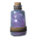
Blob Bomb: FrostIf you hold it for too long your hand might just freeze in place.
Zo kom je eraan
- Maken: Werkbank uit 1 × Corked Vial, 1 ×
 Kleine ijsdraaktrofee, 3 × Hars
Kleine ijsdraaktrofee, 3 × Hars
 Blob Bomb: Lava
Blob Bomb: Lava
The vial is hot in your hand, promising fiery destruction.
Zo kom je eraan
- Maken: Werkbank uit 1 × Corked Vial, 10 ×
 Sulfur, 10 × Proustite Powder
Sulfur, 10 × Proustite Powder
 Blob Bomb: Poison
Blob Bomb: Poison
Should this vial break, caution is strongly advised.
Zo kom je eraan
- Maken: Werkbank uit 1 × Corked Vial, 1 × Kloddertrofee, 3 × Hars
 Blob Bomb: Pulp
Blob Bomb: Pulp
A dungeon is where the blob is.
Zo kom je eraan
- Maken: Werkbank uit 1 × Corked Vial, 1 ×
 Pulp Trophy, 3 ×
Pulp Trophy, 3 ×  Dead Pulp
Dead Pulp
 Blob Bomb: Tar
Blob Bomb: Tar
The sticky substance within pulses, as if threatening you.
Zo kom je eraan
- Maken: Werkbank uit 1 × Corked Vial, 1 ×
 Gezweltrofee, 3 ×
Gezweltrofee, 3 ×  Teer
Teer
 Blood Fang
Blood Fang
Arrows loosed from this bow will tear into flesh with unmatched ferocity.
Zo kom je eraan
- Maken: Black Forge (niveau 4) uit 1 × Ash Fang, 5 × Vlammetaal, 1 × Bloodstone · per upgrade: 5 × Vlammetaal, 1 × Bloodstone
 Bloodgeon
Bloodgeon
The blood all but soaks into this mace, and it always yearns for more.
Zo kom je eraan
- Maken: Black Forge (niveau 4) uit 1 ×
 Flametal Mace, 8 × Vlammetaal, 1 × Bloodstone · per upgrade: 8 × Vlammetaal, 1 × Bloodstone
Flametal Mace, 8 × Vlammetaal, 1 × Bloodstone · per upgrade: 8 × Vlammetaal, 1 × Bloodstone
 Bloodgold Arrow
Bloodgold Arrow
An arrow forged of perhaps the hardest materials in this world...
Zo kom je eraan
- Maken: 20 × Black Forge uit 1 ×
 Bloodgold, 2 × Veren, 8 ×
Bloodgold, 2 × Veren, 8 ×  Timberwood
Timberwood
 Bloodgold Bolt
Bloodgold Bolt
A bolt forged of perhaps the hardest materials in this world...
Zo kom je eraan
- Maken: 20 × Black Forge uit 1 × Bloodgold, 8 × Timberwood, 2 × Veren
 Bloodgold Missile
Bloodgold Missile
Your attacker shall stand no chance as this missile finds its target.
Zo kom je eraan
- Maken: 20 × Ambachtstafel uit 10 × Timberwood, 1 × Bloodgold
 Bone Bolt
Bone Bolt
A crude bolt of yellowed bone.
Zo kom je eraan
- Maken: 20 × Black Forge uit 8 ×
 Bottenfragmenten, 2 × Veren
Bottenfragmenten, 2 × Veren
 Bronzen atgeir
Bronzen atgeir
Gereedschap van een echte krijger.
Zo kom je eraan
- Maken: Smidse uit 10 × Hout, 8 ×
 Brons, 2 ×
Brons, 2 ×  Leren banden · per upgrade: 4 × Brons
Leren banden · per upgrade: 4 × Brons
 Bronzen bijl
Bronzen bijl
Een glimmend en gepolijst bijlvlak, gekromd als een glimlach.
Zo kom je eraan
- Maken: Smidse uit 4 × Hout, 8 × Brons, 2 × Leren banden · per upgrade: 4 × Brons, 1 × Leren banden
 Bronzen houweel
Bronzen houweel
Een goede bronzen houweel. Kan zeer harde rotsen breken.
Zo kom je eraan
 Bronzen pijl
Bronzen pijl
Scherper dan vuursteen, een slanke brenger des doods.
Zo kom je eraan
 Bronzen speer
Bronzen speer
Een stevige speer van gepolijst brons.
Zo kom je eraan
- Maken: Smidse uit 5 × Hout, 6 × Brons, 2 ×
 Hertenpels · per upgrade: 3 × Hout, 4 × Brons, 1 × Hertenpels
Hertenpels · per upgrade: 3 × Hout, 4 × Brons, 1 × Hertenpels
 Bronzen strijdknots
Bronzen strijdknots
Hoofdpijn op een stok.
Zo kom je eraan
- Maken: Smidse uit 4 × Hout, 8 × Brons, 3 × Leren banden · per upgrade: 4 × Brons
 Bronzen zwaard
Bronzen zwaard
Een bloeddrinker. Deze vriend heeft dorst.
Zo kom je eraan
- Maken: Smidse uit 2 × Hout, 8 × Brons, 2 × Leren banden · per upgrade: 1 × Hout, 4 × Brons, 1 × Leren banden
 Brutal Slayer
Brutal Slayer
If it bleeds, you can kill it.
Zo kom je eraan
- Maken: Black Forge (niveau 4) uit 1 ×
 Slayer, 15 × Vlammetaal, 1 × Bloodstone · per upgrade: 15 × Vlammetaal, 1 × Bloodstone
Slayer, 15 × Vlammetaal, 1 × Bloodstone · per upgrade: 15 × Vlammetaal, 1 × Bloodstone
 Carapace Arrow
Carapace Arrow
Heavy and pointy, this one's gonna hurt.
Zo kom je eraan
- Maken: 20 × Black Forge uit 4 ×
 Carapace, 2 × Veren, 8 × Hout
Carapace, 2 × Veren, 8 × Hout - Kisten: Rottend gat (Morgen) · 3–12 × · 46 % kans
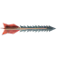
Carapace BoltA heavy and solid bolt.
Zo kom je eraan
 Carapace Spear
Carapace Spear
Sharpened to jagged perfection, this spear is sure to be deadly.
Zo kom je eraan
- Maken: Black Forge uit 10 × Yggdrasil Wood, 4 × Carapace, 2 ×
 Mandible · per upgrade: 5 × Yggdrasil Wood, 4 × Carapace, 1 × Mandible
Mandible · per upgrade: 5 × Yggdrasil Wood, 4 × Carapace, 1 × Mandible
 Charred Arrow
Charred Arrow
This arrow has been whittled into shape from a charred femur, and it's as hard as any metal.
Zo kom je eraan
- Maken: 20 × Black Forge uit 4 × Charred Bone, 2 × Veren, 8 × Ashwood
- Kisten: Steenschip (graf) · 5–11 × · 53 % kans, Dorp van het noorden · 5–11 × · 53 % kans, Hut (Noorden) · 5–11 × · 52 % kans, Houthakkerskamp · 5–11 × · 52 % kans, Mörk Borg · 5–11 × · 48 % kans, Scheepswrak (Noorden) · 3–13 × · 17 % kans
 Charred Bolt
Charred Bolt
A sturdy bone from a forearm, shaped into a deadly bolt.
Zo kom je eraan
- Maken: 20 × Black Forge uit 2 × Charred Bone, 8 × Ashwood, 2 × Veren
- Kisten: Steenschip (graf) · 5–11 × · 53 % kans, Dorp van het noorden · 5–11 × · 53 % kans, Hut (Noorden) · 5–11 × · 52 % kans, Houthakkerskamp · 5–11 × · 52 % kans, Scheepswrak (Noorden) · 3–13 × · 17 % kans
 Cold Fishing Bait
Cold Fishing Bait
This bait doesn't look like much, but it's a treat to fish that live where it's cold and dark.
Zo kom je eraan
- Maken: 20 × Food Preparation Table uit 20 × Aas, 1 ×
 Fenringtrofee
Fenringtrofee
Gebruik
- Aas voor: Tetra
 Dead Raiser
Dead Raiser
Sacrifice a bit of blood to raise the dead. Upgrade the skull to spawn multiple skeletons, and increase your blood magic to make them stronger.
Zo kom je eraan
- Maken: Galdr Table uit 10 × Bottenfragmenten, 16 ×
 Refined Eitr, 4 ×
Refined Eitr, 4 ×  Skelettrofee · per upgrade: 5 × Bottenfragmenten, 8 × Refined Eitr, 2 × Skelettrofee
Skelettrofee · per upgrade: 5 × Bottenfragmenten, 8 × Refined Eitr, 2 × Skelettrofee
 Demolisher
Demolisher
This mighty sledge yearns to wreak havoc.
Zo kom je eraan
- Maken: Black Forge uit 10 × Yggdrasil Wood, 20 ×
 IJzer, 10 × Refined Eitr · per upgrade: 2 × Yggdrasil Wood, 15 × IJzer, 2 × Refined Eitr
IJzer, 10 × Refined Eitr · per upgrade: 2 × Yggdrasil Wood, 15 × IJzer, 2 × Refined Eitr
 Draugensnijder
Draugensnijder
Donker hout gespannen met een glinsterende pees, een boosaardig ding.
Zo kom je eraan
- Maken: Smidse (niveau 2) uit 10 ×
 Oeroude bast, 20 ×
Oeroude bast, 20 ×  Zilver, 2 × Hertenpels, 10 ×
Zilver, 2 × Hertenpels, 10 ×  Kleefsel · per upgrade: 5 × Oeroude bast, 10 × Zilver, 2 × Hertenpels, 2 × Kleefsel
Kleefsel · per upgrade: 5 × Oeroude bast, 10 × Zilver, 2 × Hertenpels, 2 × Kleefsel
 Dundr
Dundr
What happens next may shock you.
Zo kom je eraan
- Maken: Galdr Table (niveau 2) uit 10 × Ashwood, 4 × Vlammetaal, 3 ×
 Celestial Feather, 1 × Bloodstone · per upgrade: 5 × Ashwood, 2 × Vlammetaal, 3 × Celestial Feather, 1 × Bloodstone
Celestial Feather, 1 × Bloodstone · per upgrade: 5 × Ashwood, 2 × Vlammetaal, 3 × Celestial Feather, 1 × Bloodstone
 Dvergr Lantern
Dvergr Lantern
A simple torch would just be so old fashioned.
Zo kom je eraan
- Maken: Black Forge uit 2 × Brons, 1 ×
 Surtlingkern, 1 ×
Surtlingkern, 1 ×  Kristal
Kristal - Oprapen: Dvergr-opgraving, Dvergr-wachttoren, Verkoolde torenruïne, Dvergr-vuurtoren, De Koningin
Gebruik
- Bouwmateriaal voor: Dvergr Pole Lantern, Dvergr Wall Lantern
 Dvergr Tankard
Dvergr Tankard
It can hold a lot of mead!
Zo kom je eraan
- Kisten: Besmette mijn · 6,3 % kans
- Oprapen: Dvergr-wachttoren, Dvergr-vuurtoren, De Koningin
 Dyrnwyn
Dyrnwyn
The sword that was broken is whole once more. Its flames burn hot, fuelled by the memories of ancient warriors.
Zo kom je eraan
- Maken: Black Forge (niveau 4) uit 1 ×
 Dyrnwyn Hilt Fragment, 1 ×
Dyrnwyn Hilt Fragment, 1 ×  Dyrnwyn Blade Fragment, 1 ×
Dyrnwyn Blade Fragment, 1 ×  Dyrnwyn Tip Fragment, 20 × Vlammetaal, 1 × Bloodstone · per upgrade: 10 × Vlammetaal, 1 × Bloodstone
Dyrnwyn Tip Fragment, 20 × Vlammetaal, 1 × Bloodstone · per upgrade: 10 × Vlammetaal, 1 × Bloodstone
 Early Axes
Early Axes
Mighty weapons from long ago, from a time when the world was still young and incomplete...
Zo kom je eraan
- Maken: Werkbank uit 4 × Hout, 1 ×
 Curious Axe Head, 1 ×
Curious Axe Head, 1 ×  Mysterious Axe Head · per upgrade: 2 × Hout, 2 × Leren banden
Mysterious Axe Head · per upgrade: 2 × Hout, 2 × Leren banden
 Echo Spike
Echo Spike
A chill that goes right through to the bone.
Zo kom je eraan
- Maken: Galdr Table (niveau 3) uit 10 × Bloodgold, 4 ×
 Nornathread, 1 ×
Nornathread, 1 ×  Frostfire Essence · per upgrade: 5 × Bloodgold, 2 × Nornathread, 1 × Frostfire Essence
Frostfire Essence · per upgrade: 5 × Bloodgold, 2 × Nornathread, 1 × Frostfire Essence - Bereiden: Frost Foundry uit
 Cast: Echo Spike
Cast: Echo Spike
 Ember Charge
Ember Charge
Trapped embers, ready to burst. Caution is advised.
Zo kom je eraan
 Fijnhouten boog
Fijnhouten boog
Een eenvoudige boog van sterk, soepel hout.
Zo kom je eraan
- Maken: Werkbank uit 10 × Fijn hout, 10 ×
 Kernhout, 2 × Hertenpels · per upgrade: 5 × Fijn hout, 5 × Kernhout, 2 × Hertenpels
Kernhout, 2 × Hertenpels · per upgrade: 5 × Fijn hout, 5 × Kernhout, 2 × Hertenpels
Flametal Mace
Dense yet spiked flametal, perfect for bashing enemy faces in.
Zo kom je eraan
- Maken: Black Forge (niveau 3) uit 10 × Charred Bone, 15 × Vlammetaal, 5 × Sulfur, 3 × Asksvin Hide · per upgrade: 5 × Charred Bone, 8 × Vlammetaal, 3 × Sulfur, 2 × Asksvin Hide
Gebruik
- Ingrediënt voor: Bloodgeon, Klossen, Storm Star
 Flametal Missile
Flametal Missile
Forged from one of the hardest metals in all of Valheim, this missile is sure to hold off your enemies.
Zo kom je eraan
- Maken: 20 × Ambachtstafel uit 10 × Ashwood, 1 × Vlammetaal
 Flesh Rippers
Flesh Rippers
If claws work for wolves, why not for a viking?
Zo kom je eraan
- Maken: Smidse (niveau 3) uit 10 ×
 Fenris Hair, 6 ×
Fenris Hair, 6 ×  Fenris Claw, 10 × Zilver · per upgrade: 1 × Fenris Hair, 1 × Fenris Claw, 1 × Zilver
Fenris Claw, 10 × Zilver · per upgrade: 1 × Fenris Hair, 1 × Fenris Claw, 1 × Zilver
 Frostfire Atgeir
Frostfire Atgeir
Let the flames begin to devour, while the ice claims whatever remains.
Zo kom je eraan
- Maken: Black Forge (niveau 4) uit 1 ×
 Nord Atgeir, 20 × Bloodgold, 1 × Frostfire Essence · per upgrade: 10 × Bloodgold, 1 × Frostfire Essence
Nord Atgeir, 20 × Bloodgold, 1 × Frostfire Essence · per upgrade: 10 × Bloodgold, 1 × Frostfire Essence
 Frostfire Axe
Frostfire Axe
Burn it all to the ground, or freeze it in an eternal moment of destruction...
Zo kom je eraan
- Maken: Black Forge (niveau 4) uit 1 ×
 Nord Axe, 20 × Bloodgold, 1 × Frostfire Essence · per upgrade: 10 × Bloodgold, 1 × Frostfire Essence
Nord Axe, 20 × Bloodgold, 1 × Frostfire Essence · per upgrade: 10 × Bloodgold, 1 × Frostfire Essence
 Frostfire Bow
Frostfire Bow
Keep your head cool as you draw, and then let your fury loose with your arrows.
Zo kom je eraan
- Maken: Black Forge (niveau 4) uit 1 ×
 Nord Bow, 20 × Bloodgold, 1 × Frostfire Essence · per upgrade: 10 × Bloodgold, 1 × Frostfire Essence
Nord Bow, 20 × Bloodgold, 1 × Frostfire Essence · per upgrade: 10 × Bloodgold, 1 × Frostfire Essence
 Frostfire Crossbow
Frostfire Crossbow
If your enemies don't freeze as you take aim, they are sure to do so once they are hit.
Zo kom je eraan
- Maken: Black Forge (niveau 4) uit 1 ×
 Nord Crossbow, 20 × Bloodgold, 1 × Frostfire Essence · per upgrade: 10 × Bloodgold, 1 × Frostfire Essence
Nord Crossbow, 20 × Bloodgold, 1 × Frostfire Essence · per upgrade: 10 × Bloodgold, 1 × Frostfire Essence
 Frostfire Dagger
Frostfire Dagger
A cut from this blade stings like ice, then burns like the flame.
Zo kom je eraan
- Maken: Black Forge (niveau 4) uit 1 ×
 Nord Dagger, 20 × Bloodgold, 1 × Frostfire Essence · per upgrade: 10 × Bloodgold, 1 × Frostfire Essence
Nord Dagger, 20 × Bloodgold, 1 × Frostfire Essence · per upgrade: 10 × Bloodgold, 1 × Frostfire Essence
 Frostfire Greataxe
Frostfire Greataxe
Strike your foes with a frozen inferno!
Zo kom je eraan
- Maken: Black Forge (niveau 4) uit 1 ×
 Nord Greataxe, 20 × Bloodgold, 1 × Frostfire Essence · per upgrade: 10 × Bloodgold, 1 × Frostfire Essence
Nord Greataxe, 20 × Bloodgold, 1 × Frostfire Essence · per upgrade: 10 × Bloodgold, 1 × Frostfire Essence
 Frostfire Greatsword
Frostfire Greatsword
The choice between a fiery end and a frozen one is simple: Both at the same time.
Zo kom je eraan
- Maken: Black Forge (niveau 4) uit 1 ×
 Nord Greatsword, 20 × Bloodgold, 1 × Frostfire Essence · per upgrade: 10 × Bloodgold, 1 × Frostfire Essence
Nord Greatsword, 20 × Bloodgold, 1 × Frostfire Essence · per upgrade: 10 × Bloodgold, 1 × Frostfire Essence
 Frostfire Knucklechains
Frostfire Knucklechains
A slight risk of frostbite is inevitable.
Zo kom je eraan
- Maken: Black Forge (niveau 4) uit 1 ×
 Nord Knucklechains, 20 × Bloodgold, 1 × Frostfire Essence · per upgrade: 10 × Bloodgold, 1 × Frostfire Essence
Nord Knucklechains, 20 × Bloodgold, 1 × Frostfire Essence · per upgrade: 10 × Bloodgold, 1 × Frostfire Essence
 Frostfire Mace
Frostfire Mace
Are those sparks that fly as this weapon finds its impact, or are they shards of ice?
Zo kom je eraan
- Maken: Black Forge (niveau 4) uit 1 ×
 Nord Mace, 20 × Bloodgold, 1 × Frostfire Essence · per upgrade: 10 × Bloodgold, 1 × Frostfire Essence
Nord Mace, 20 × Bloodgold, 1 × Frostfire Essence · per upgrade: 10 × Bloodgold, 1 × Frostfire Essence
 Frostfire Sledge
Frostfire Sledge
Is it so cold that it's burning, or so hot that it's freezing?
Zo kom je eraan
- Maken: Black Forge (niveau 4) uit 1 ×
 Nord Sledge, 20 × Bloodgold, 1 × Frostfire Essence · per upgrade: 10 × Bloodgold, 1 × Frostfire Essence
Nord Sledge, 20 × Bloodgold, 1 × Frostfire Essence · per upgrade: 10 × Bloodgold, 1 × Frostfire Essence
 Frostfire Spear
Frostfire Spear
Dipped in frozen flames, this spear spells certain doom.
Zo kom je eraan
- Maken: Black Forge (niveau 4) uit 1 ×
 Nord Spear, 20 × Bloodgold, 1 × Frostfire Essence · per upgrade: 10 × Bloodgold, 1 × Frostfire Essence
Nord Spear, 20 × Bloodgold, 1 × Frostfire Essence · per upgrade: 10 × Bloodgold, 1 × Frostfire Essence
 Frostfire Sword
Frostfire Sword
Flames dance along this blade, but are they hot or cold?
Zo kom je eraan
- Maken: Black Forge (niveau 4) uit 1 ×
 Nord Sword, 20 × Bloodgold, 1 × Frostfire Essence · per upgrade: 10 × Bloodgold, 1 × Frostfire Essence
Nord Sword, 20 × Bloodgold, 1 × Frostfire Essence · per upgrade: 10 × Bloodgold, 1 × Frostfire Essence
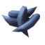
Frosty Fishing BaitIt's not very nutritious, so the only fish that'll take this bait are the ones that are used to just eating ice.
Zo kom je eraan
- Maken: 20 × Food Preparation Table uit 20 × Aas, 1 × Kleine ijsdraaktrofee
Gebruik
- Aas voor: Northern Salmon
 Geweihouweel
Geweihouweel
Dit gereedschap kan zelfs de meest koppige rotsen breken.
Zo kom je eraan
- Maken: Werkbank uit 10 × Hout, 1 ×
 Hard gewei
Hard gewei
 Gifpijl
Gifpijl
Een bittere steek van een afstand.
Zo kom je eraan
- Maken: 20 × Werkbank (niveau 3) uit 8 × Hout, 4 ×
 Obsidiaan, 2 × Veren, 2 ×
Obsidiaan, 2 × Veren, 2 ×  Slijm
Slijm - Kisten: Moerasruïne (toren) · 10–15 × · 37 % kans, Grafveld · 10–15 × · 37 % kans, Verzonken crypte · 10–15 × · 36 % kans
 Grappling Hook
Grappling Hook
For a dramatic entrance, or a swift retreat.
Zo kom je eraan
- Maken: Black Forge uit 10 × Yggdrasil Wood, 10 × Refined Eitr, 4 × Mandible, 1 ×
 Hook
Hook
 Hamer
Hamer
Met dit in je hand kun je grootse huizen en stevige vestingwerken bouwen.
Zo kom je eraan
 Heavy Fishing Bait
Heavy Fishing Bait
This bait sinks deep, deep enough to lure the fish swimming along the very bottom of the sea.
Zo kom je eraan
- Maken: 20 × Food Preparation Table uit 20 × Aas, 1 ×
 Serpenttrofee
Serpenttrofee
Gebruik
 Hengel
Hengel
Standaardhengel van de dvergr.
Zo kom je eraan
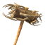
HertenbrekerEen wapen dat de goden waardig is! Als je hiermee geraakt wordt, ga je dat weten…
Zo kom je eraan
- Maken: Werkbank (niveau 2) uit 20 × Kernhout, 5 ×
 Herttrofee, 2 × Leren banden · per upgrade: 5 × Kernhout, 2 × Herttrofee, 1 × Leren banden, 10 × Bottenfragmenten
Herttrofee, 2 × Leren banden · per upgrade: 5 × Kernhout, 2 × Herttrofee, 1 × Leren banden, 10 × Bottenfragmenten
 Himminafl
Himminafl
It might not be a hammer, but Thor himself would still approve of this weapon.
Zo kom je eraan
- Maken: Black Forge uit 10 × Yggdrasil Wood, 15 × Refined Eitr, 5 × Zilver, 2 × Mandible · per upgrade: 15 × Refined Eitr, 5 × Zilver, 2 × Mandible
 Horn of Celebration
Horn of Celebration
One year since we arrived... Skål!
Zo kom je eraan
- Maken: Werkbank uit 2 × Brons, 2 ×
 Trollenhuid, 2 × IJzer
Trollenhuid, 2 × IJzer
 Hot Fishing Bait
Hot Fishing Bait
Some fish already like it where the waters are warm, and this bait brings the temperature close to boiling.
Zo kom je eraan
- Maken: 20 × Food Preparation Table uit 20 × Aas, 1 ×
 Warrior Trophy
Warrior Trophy
Gebruik
- Aas voor: Magmafish
 Houten pijl
Houten pijl
Een pijl van verscherpt hout.
Zo kom je eraan
- Maken: 20 × Werkbank uit 8 × Hout
 IJzeren atgeir
IJzeren atgeir
Bloeddrinker, schedelkraker, doodsbrenger.
Zo kom je eraan
- Maken: Smidse (niveau 2) uit 10 × Hout, 30 × IJzer, 2 × Leren banden · per upgrade: 15 × IJzer, 1 × Leren banden
 IJzeren bijl
IJzeren bijl
Scherp en sterk. Een ware vriend van de houthakker.
Zo kom je eraan
- Maken: Smidse (niveau 2) uit 4 × Hout, 20 × IJzer, 2 × Leren banden · per upgrade: 10 × IJzer, 1 × Leren banden
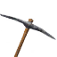
IJzeren houweelEen stevig gereedschap van gehard ijzer.
Zo kom je eraan
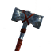
IJzeren mokerEen machtige hamer, een kampioen waardig.
Zo kom je eraan
- Maken: Smidse (niveau 2) uit 10 × Oeroude bast, 30 × IJzer, 4 ×
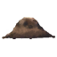
Ymirvlees, 1 × Draugenelitetrofee · per upgrade: 2 × Oeroude bast, 15 × IJzer, 2 × Ymirvlees
Draugenelitetrofee · per upgrade: 2 × Oeroude bast, 15 × IJzer, 2 × Ymirvlees
 IJzeren pijl
IJzeren pijl
Een ijzeren punt en donkere veren aan het uiteinde.
Zo kom je eraan
- Maken: 20 × Smidse (niveau 2) uit 8 × Hout, 1 × IJzer, 2 × Veren
- Kisten: Moerasruïne (toren) · 10–15 × · 37 % kans, Grafveld · 10–15 × · 37 % kans, Verzonken crypte · 10–15 × · 36 % kans
 IJzeren strijdknots
IJzeren strijdknots
Een stuk ijzer ter grootte van je vuist op een houten steel.
Zo kom je eraan
- Maken: Smidse (niveau 2) uit 4 × Hout, 20 × IJzer, 3 × Leren banden · per upgrade: 10 × IJzer
 IJzeren zwaard
IJzeren zwaard
De grens tussen leven en dood loopt over de rand van dit zwaard.
Zo kom je eraan
- Maken: Smidse (niveau 2) uit 2 × Hout, 20 × IJzer, 3 × Leren banden · per upgrade: 1 × Hout, 10 × IJzer, 2 × Leren banden
 Iron Bolt
Iron Bolt
A sturdy iron missile.
Zo kom je eraan
 Jagersboog
Jagersboog
Mooi bewerkt en goed gespannen. Een genot voor iedere jager.
Zo kom je eraan
- Maken: Smidse uit 10 × Fijn hout, 20 × IJzer, 10 × Veren, 2 × Hertenpels · per upgrade: 5 × Fijn hout, 10 × IJzer, 5 × Veren, 2 × Hertenpels
 Jotun Bane
Jotun Bane
Not even the giants of old could weather the poisonous bite of this weapon.
Zo kom je eraan
- Maken: Black Forge uit 5 × Yggdrasil Wood, 15 × IJzer, 3 ×
 Bilebag, 10 × Refined Eitr · per upgrade: 10 × IJzer, 1 × Bilebag, 1 × Refined Eitr
Bilebag, 10 × Refined Eitr · per upgrade: 10 × IJzer, 1 × Bilebag, 1 × Refined Eitr
 Kloofharpoen
Kloofharpoen
De wraak van de oceaan.
Zo kom je eraan
- Maken: Werkbank (niveau 2) uit 8 × Fijn hout, 30 ×
 Chitine, 3 × Leren banden
Chitine, 3 × Leren banden
 Kloofsnijder
Kloofsnijder
Een mes uit de diepte.
Zo kom je eraan
- Maken: Werkbank (niveau 2) uit 4 × Fijn hout, 20 × Chitine, 2 × Leren banden · per upgrade: 10 × Chitine
 Klossen
Klossen
If the force of your blow isn't enough to knock your enemies to the ground, perhaps the primal roots will hold them down for you.
Zo kom je eraan
- Maken: Black Forge (niveau 4) uit 1 × Flametal Mace, 8 × Vlammetaal, 1 ×
 Jade · per upgrade: 8 × Vlammetaal, 1 × Jade
Jade · per upgrade: 8 × Vlammetaal, 1 × Jade
 Knots
Knots
Primitief, maar nuttig.
Zo kom je eraan
- Maken: zonder werkbank uit 6 × Hout · per upgrade: 5 × Bottenfragmenten
 Koperen mes
Koperen mes
Een glimmend koperen mes.
Zo kom je eraan
- Maken: Smidse uit 2 × Hout, 8 ×
 Koper · per upgrade: 4 × Koper, 8 ×
Koper · per upgrade: 4 × Koper, 8 ×  Grijze dwergoog
Grijze dwergoog
 Kristallen strijdbijl
Kristallen strijdbijl
Doorzichtig en doorklievend.
Zo kom je eraan
- Maken: Smidse (niveau 3) uit 40 × Oeroude bast, 30 × Zilver, 10 × Kristal · per upgrade: 5 × Oeroude bast, 15 × Zilver
 Krom
Krom
As deadly as it is shiny, and it's very shiny.
Zo kom je eraan
- Maken: Black Forge uit 30 × IJzer, 20 × Brons, 5 ×
 Scale Hide · per upgrade: 15 × IJzer, 10 × Brons, 5 × Scale Hide
Scale Hide · per upgrade: 15 × IJzer, 10 × Brons, 5 × Scale Hide
 Lightning Strike
Lightning Strike
Simply point, and you shall summon the wrath of the sky.
Zo kom je eraan
- Maken: Galdr Table (niveau 3) uit 10 × Bloodgold, 5 × Nornathread, 1 ×
 Thunderblood Essence · per upgrade: 5 × Bloodgold, 2 × Nornathread, 1 × Thunderblood Essence
Thunderblood Essence · per upgrade: 5 × Bloodgold, 2 × Nornathread, 1 × Thunderblood Essence - Bereiden: Frost Foundry uit
 Cast: Lightning Strike
Cast: Lightning Strike
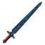
MistwalkerThe faint glow seems to slice through the mist.
Zo kom je eraan
- Maken: Black Forge uit 3 × Fijn hout, 15 × IJzer, 10 × Refined Eitr, 3 ×
 Wisp · per upgrade: 10 × IJzer, 5 × Refined Eitr, 1 × Wisp
Wisp · per upgrade: 10 × IJzer, 5 × Refined Eitr, 1 × Wisp
 Misty Fishing Bait
Misty Fishing Bait
A bait to guide the fish to you through shrouded waters.
Zo kom je eraan
- Maken: 20 × Food Preparation Table uit 20 × Aas, 1 ×
 Hossentrofee
Hossentrofee
Gebruik
- Aas voor: Anglerfish, Pufferfish
 Mossy Fishing Bait
Mossy Fishing Bait
Dead trolls in the forest often attract a fish or two, speed up the process with this bait!
Zo kom je eraan
- Maken: 20 × Food Preparation Table uit 20 × Aas, 1 ×
 Troltrofee
Troltrofee
Gebruik
- Aas voor: Trollfish
 Naaldpijl
Naaldpijl
De laatste hechting.
Zo kom je eraan
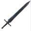
NidhöggNamed after the evil dragon that dwells by the roots of the world tree, this sword heralds doom for those who cross its path.
Zo kom je eraan
- Maken: Black Forge (niveau 3) uit 3 × Charred Bone, 12 × Vlammetaal, 2 × Asksvin Hide · per upgrade: 10 × Vlammetaal, 2 × Asksvin Hide
Gebruik
- Ingrediënt voor: Nidhögg the Bleeding, Nidhögg the Primal, Nidhögg the Thundering
 Nidhögg the Bleeding
Nidhögg the Bleeding
If you bleed, your foes are sure to do so as well.
Zo kom je eraan
- Maken: Black Forge (niveau 4) uit 1 × Nidhögg, 6 × Vlammetaal, 1 × Bloodstone · per upgrade: 6 × Vlammetaal, 1 × Bloodstone
 Nidhögg the Primal
Nidhögg the Primal
Tangle your foes in roots, like the namesake of this blade.
Zo kom je eraan
- Maken: Black Forge (niveau 4) uit 1 × Nidhögg, 6 × Vlammetaal, 1 × Jade · per upgrade: 6 × Vlammetaal, 1 × Jade
 Nidhögg the Thundering
Nidhögg the Thundering
The power of lightning dances along the blade of this sword, a promise of the pain to come.
Zo kom je eraan
- Maken: Black Forge (niveau 4) uit 1 × Nidhögg, 6 × Vlammetaal, 1 ×
 Iolite · per upgrade: 6 × Vlammetaal, 1 × Iolite
Iolite · per upgrade: 6 × Vlammetaal, 1 × Iolite
Nord Atgeir
The edge of this weapon is as deadly as it is shiny.
Zo kom je eraan
- Maken: Black Forge (niveau 4) uit 20 × Bloodgold, 1 ×
 Mould: Nord Atgeir, 10 × Timberwood · per upgrade: 10 × Bloodgold, 5 × Timberwood
Mould: Nord Atgeir, 10 × Timberwood · per upgrade: 10 × Bloodgold, 5 × Timberwood - Bereiden: Frost Foundry uit
 Cast: Nord Atgeir
Cast: Nord Atgeir
Gebruik
- Ingrediënt voor: Frostfire Atgeir, Thunderblood Atgeir
Nord Axe
A finely detailed axe, for finely cutting down your enemies.
Zo kom je eraan
- Maken: Black Forge (niveau 4) uit 20 × Bloodgold, 1 ×
 Mould: Nord Axe, 10 × Timberwood · per upgrade: 10 × Bloodgold, 5 × Timberwood
Mould: Nord Axe, 10 × Timberwood · per upgrade: 10 × Bloodgold, 5 × Timberwood - Bereiden: Frost Foundry uit
 Cast: Nord Axe
Cast: Nord Axe
Gebruik
- Ingrediënt voor: Frostfire Axe, Thunderblood Axe
Nord Bow
This bow shall find its target with a golden precision.
Zo kom je eraan
- Maken: Black Forge (niveau 4) uit 20 × Bloodgold, 1 ×
 Mould: Nord Bow, 10 × Timberwood · per upgrade: 10 × Bloodgold, 5 × Timberwood
Mould: Nord Bow, 10 × Timberwood · per upgrade: 10 × Bloodgold, 5 × Timberwood - Bereiden: Frost Foundry uit
 Cast: Nord Bow
Cast: Nord Bow
Gebruik
- Ingrediënt voor: Frostfire Bow, Thunderblood Bow
Nord Crossbow
An incredible force is bound to this weapon, waiting to be unleashed.
Zo kom je eraan
- Maken: Black Forge (niveau 4) uit 20 × Bloodgold, 1 ×
 Mould: Nord Crossbow, 10 × Timberwood · per upgrade: 10 × Bloodgold, 5 × Timberwood
Mould: Nord Crossbow, 10 × Timberwood · per upgrade: 10 × Bloodgold, 5 × Timberwood - Bereiden: Frost Foundry uit
 Cast: Nord Crossbow
Cast: Nord Crossbow
Gebruik
- Ingrediënt voor: Frostfire Crossbow, Thunderblood Crossbow
Nord Dagger
A flash of gold is the last thing your foes will ever see.
Zo kom je eraan
- Maken: Black Forge (niveau 4) uit 20 × Bloodgold, 1 ×
 Mould: Nord Dagger, 10 × Timberwood · per upgrade: 10 × Bloodgold, 5 × Timberwood
Mould: Nord Dagger, 10 × Timberwood · per upgrade: 10 × Bloodgold, 5 × Timberwood - Bereiden: Frost Foundry uit
 Cast: Nord Dagger
Cast: Nord Dagger
Gebruik
- Ingrediënt voor: Frostfire Dagger, Thunderblood Dagger
Nord Greataxe
A mighty axe fit for a mighty warrior.
Zo kom je eraan
- Maken: Black Forge (niveau 4) uit 20 × Bloodgold, 1 ×
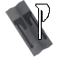
Mould: Nord Greataxe, 10 ×Timberwood · per upgrade: 10 × Bloodgold, 5 × Timberwood - Bereiden: Frost Foundry uit
 Cast: Nord Greataxe
Cast: Nord Greataxe
Gebruik
- Ingrediënt voor: Frostfire Greataxe, Thunderblood Greataxe
Nord Greatsword
A striking weapon, both visually and lethally.
Zo kom je eraan
- Maken: Black Forge (niveau 4) uit 20 × Bloodgold, 1 ×
 Mould: Nord Greatsword, 2 ×
Mould: Nord Greatsword, 2 ×  Frozen Branch · per upgrade: 10 × Bloodgold, 1 × Frozen Branch
Frozen Branch · per upgrade: 10 × Bloodgold, 1 × Frozen Branch - Bereiden: Frost Foundry uit
 Cast: Nord Greatsword
Cast: Nord Greatsword
Gebruik
- Ingrediënt voor: Frostfire Greatsword, Thunderblood Greatsword
Nord Knucklechains
Wrap your fists in the hardest of metals, to ensure your foes feel the strength behind your blows.
Zo kom je eraan
- Maken: Black Forge (niveau 4) uit 20 × Bloodgold, 1 ×
 Mould: Nord Knucklechains, 10 × Timberwood · per upgrade: 10 × Bloodgold, 5 × Timberwood
Mould: Nord Knucklechains, 10 × Timberwood · per upgrade: 10 × Bloodgold, 5 × Timberwood - Bereiden: Frost Foundry uit
 Cast: Nord Knucklechains
Cast: Nord Knucklechains
Gebruik
- Ingrediënt voor: Frostfire Knucklechains, Thunderblood Knucklechains
Nord Mace
Hit hard and fast, and leave your foe no time to recover.
Zo kom je eraan
- Maken: Black Forge (niveau 4) uit 20 × Bloodgold, 1 ×
 Mould: Nord Mace, 10 × Timberwood · per upgrade: 10 × Bloodgold, 5 × Timberwood
Mould: Nord Mace, 10 × Timberwood · per upgrade: 10 × Bloodgold, 5 × Timberwood - Bereiden: Frost Foundry uit
 Cast: Nord Mace
Cast: Nord Mace
Gebruik
- Ingrediënt voor: Frostfire Mace, Thunderblood Mace
Nord Sledge
With this weapon, your blows will be heavy as that of a troll.
Zo kom je eraan
- Maken: Black Forge (niveau 4) uit 20 × Bloodgold, 1 ×
 Mould: Nord Sledge, 10 × Timberwood · per upgrade: 10 × Bloodgold, 5 × Timberwood
Mould: Nord Sledge, 10 × Timberwood · per upgrade: 10 × Bloodgold, 5 × Timberwood - Bereiden: Frost Foundry uit
 Cast: Nord Sledge
Cast: Nord Sledge
Gebruik
- Ingrediënt voor: Frostfire Sledge, Thunderblood Sledge
Nord Spear
A golden opportunity to strike.
Zo kom je eraan
- Maken: Black Forge (niveau 4) uit 20 × Bloodgold, 1 ×
 Mould: Nord Spear, 10 × Timberwood · per upgrade: 10 × Bloodgold, 5 × Timberwood
Mould: Nord Spear, 10 × Timberwood · per upgrade: 10 × Bloodgold, 5 × Timberwood - Bereiden: Frost Foundry uit
 Cast: Nord Spear
Cast: Nord Spear
Gebruik
- Ingrediënt voor: Frostfire Spear, Thunderblood Spear
Nord Sword
Even in the faintest sunlight, this weapon glimmers.
Zo kom je eraan
- Maken: Black Forge (niveau 4) uit 20 × Bloodgold, 1 ×
 Mould: Nord Sword, 10 × Timberwood · per upgrade: 10 × Bloodgold, 5 × Timberwood
Mould: Nord Sword, 10 × Timberwood · per upgrade: 10 × Bloodgold, 5 × Timberwood - Bereiden: Frost Foundry uit
 Cast: Nord Sword
Cast: Nord Sword
Gebruik
- Ingrediënt voor: Frostfire Sword, Thunderblood Sword
 Northern Vengeance
Northern Vengeance
A caged snowflake, endless patterns emerging from within...
Zo kom je eraan
- Maken: Galdr Table (niveau 3) uit 10 ×
 Ice, 5 × Nornathread, 1 ×
Ice, 5 × Nornathread, 1 ×  Hexen Trophy · per upgrade: 5 × Ice, 2 × Nornathread
Hexen Trophy · per upgrade: 5 × Ice, 2 × Nornathread - Bereiden: Frost Foundry uit
 Cast: Northern Vengeance
Cast: Northern Vengeance
 Obsidiaanpijl
Obsidiaanpijl
Een stukje duisternis.
Zo kom je eraan
- Maken: 20 × Werkbank (niveau 3) uit 8 × Hout, 4 × Obsidiaan, 2 × Veren
- Kisten: Stonehenge · 5–10 × · 62 % kans
 Odins medehoorn
Odins medehoorn
Odins beste krijgers verdienen de beste drank.
Zo kom je eraan
- Maken: Werkbank uit 4 × Fijn hout, 1 × Herttrofee, 2 × Hars
 Oeroude bastspeer
Oeroude bastspeer
Ondanks zijn knoestige uiterlijk is deze speer sterk en perfect in balans.
Zo kom je eraan
- Maken: Smidse (niveau 3) uit 4 × Trollenhuid, 10 × IJzer, 10 × Oeroude bast · per upgrade: 1 × Trollenhuid, 5 × IJzer, 5 × Oeroude bast
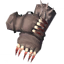
Paws of the BearMade for tearing and rending.
Zo kom je eraan
- Maken: Werkbank (niveau 2) uit 2 ×
 Bear Hide, 2 ×
Bear Hide, 2 ×  Bear Paw, 4 × Leren banden · per upgrade: 2 × Bear Hide, 2 × Leren banden
Bear Paw, 4 × Leren banden · per upgrade: 2 × Bear Hide, 2 × Leren banden
 Ploeg
Ploeg
Een landbouwgereedschap om de grond mee om te spitten.
Zo kom je eraan
 Primal Berserkir Axes
Primal Berserkir Axes
Your most primal instincts take over, and the nature around you reaches out to aid you.
Zo kom je eraan
- Maken: Black Forge (niveau 4) uit 1 × Berserkir Axes, 5 × Vlammetaal, 1 × Jade · per upgrade: 5 × Vlammetaal, 1 × Jade
 Primal Slayer
Primal Slayer
The blade works in tandem with the primal forces of the world, seeking death and slaughter.
Zo kom je eraan
- Maken: Black Forge (niveau 4) uit 1 × Slayer, 15 × Vlammetaal, 1 × Jade · per upgrade: 15 × Vlammetaal, 1 × Jade
 Primitieve boog
Primitieve boog
Een primitieve, maar nuttige boog.
Zo kom je eraan
- Maken: Werkbank uit 10 × Hout, 8 × Leren banden · per upgrade: 5 × Hout, 4 × Leren banden, 1 × Hertenpels
 Ripper
Ripper
Rips your foes apart, simple as that.
Zo kom je eraan
- Maken: Black Forge (niveau 3) uit 10 × Ashwood, 8 × Vlammetaal, 2 ×
 Morgen Sinew, 4 × Bonemaw Tooth · per upgrade: 5 × Ashwood, 4 × Vlammetaal, 1 × Morgen Sinew, 4 × Bonemaw Tooth
Morgen Sinew, 4 × Bonemaw Tooth · per upgrade: 5 × Ashwood, 4 × Vlammetaal, 1 × Morgen Sinew, 4 × Bonemaw Tooth
Gebruik
- Ingrediënt voor: Root Ripper, Storm Ripper, Wound Ripper
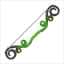
Root FangLike the twisting branch was made to seek the sun, this bow was made to seek the slaughter.
Zo kom je eraan
- Maken: Black Forge (niveau 4) uit 1 × Ash Fang, 5 × Vlammetaal, 1 × Jade · per upgrade: 5 × Vlammetaal, 1 × Jade
 Root Ripper
Root Ripper
If the bolt doesn't pin your foe in place, the roots surging up from the ground surely will.
Zo kom je eraan
- Maken: Black Forge (niveau 4) uit 1 × Ripper, 8 × Vlammetaal, 1 × Jade · per upgrade: 8 × Vlammetaal, 1 × Jade
 Schoffel
Schoffel
Een gereedschap waarmee een boer de grond bewerkt.
Zo kom je eraan
 Scourging Slayer
Scourging Slayer
The lightning bound into this blade is erratic, ever searching for something to strike.
Zo kom je eraan
- Maken: Black Forge (niveau 4) uit 1 × Slayer, 15 × Vlammetaal, 1 × Iolite · per upgrade: 15 × Vlammetaal, 1 × Iolite
 Scythe
Scythe
The right tool makes the task at hand so much easier.
Zo kom je eraan
- Maken: Smidse (niveau 2) uit 1 ×
 Scythe Handle, 6 × Zilver · per upgrade: 5 × Zilver
Scythe Handle, 6 × Zilver · per upgrade: 5 × Zilver
 Serving Tray
Serving Tray
Set the table with whatever food and drink you fancy, and impress your guests with a delicious feast. Once a feast has been eaten of, it won't return any resources if dismantled.
Zo kom je eraan
- Kopen: The Bog Witch · 140 munten
 Skoll and Hati
Skoll and Hati
Stab once for those who've betrayed you, and twice for those you hate.
Zo kom je eraan
- Maken: Black Forge uit 4 × Fijn hout, 10 × IJzer, 10 × Zwart metaal · per upgrade: 4 × IJzer, 4 × Zwart metaal
 Skull Splittur
Skull Splittur
Will find skulls to split even in the thickest of mists.
Zo kom je eraan
- Maken: Black Forge uit 30 × IJzer, 15 × Yggdrasil Wood, 10 × Refined Eitr · per upgrade: 15 × IJzer, 5 × Yggdrasil Wood
 Slagersmes
Slagersmes
Een slagersmes dat specifiek is ontworpen voor het slachten van tamme dieren.
Zo kom je eraan
Slayer
This mighty blade thirsts for the blood of foes.
Zo kom je eraan
- Maken: Black Forge (niveau 3) uit 30 × Vlammetaal, 5 × Asksvin Hide, 3 × Morgen Sinew · per upgrade: 15 × Vlammetaal, 5 × Asksvin Hide, 3 × Morgen Sinew
Gebruik
- Ingrediënt voor: Brutal Slayer, Primal Slayer, Scourging Slayer
 Slijmbom
Slijmbom
De stank is onbeschrijfelijk…
Zo kom je eraan
- Maken: 5 × Werkbank uit 5 × Leren banden, 5 × Slijm, 3 × Hars
 Smoke Bomb
Smoke Bomb
Everyone knows you can't breathe in the smoke.
Zo kom je eraan
- Maken: 10 × Werkbank uit 1 ×
 Smoke Puff, 1 × Asksvin Bladder
Smoke Puff, 1 × Asksvin Bladder
 Snow Shovel
Snow Shovel
Useful for clearing away the deepest of snow.
Zo kom je eraan
- Maken: Black Forge (niveau 3) uit 5 × Fijn hout, 4 × Vlammetaal, 2 ×
 Embers · per upgrade: 1 × Fijn hout, 10 × Vlammetaal
Embers · per upgrade: 1 × Fijn hout, 10 × Vlammetaal
Snowball
Looks like a perfect thing to throw...
Zo kom je eraan
- Oprapen: Ligt op de grond of groeit in het wild · Diepe noorden
- Buit van: Greydwarf · Diepe noorden
- Maken: 10 × zonder werkbank uit 5 × Ice
Gebruik
- Bouwmateriaal voor: Snow Lantern
 Sparkler
Sparkler
It's a stick that sparkles. Pretty!
Zo kom je eraan
- Kopen: Hildir · 150 munten
 Spinesnap
Spinesnap
Using this bow is backbreaking work but so worth it.
Zo kom je eraan
- Maken: Black Forge uit 10 × Fijn hout, 40 × Bottenfragmenten, 10 × Refined Eitr · per upgrade: 5 × Fijn hout, 20 × Bottenfragmenten
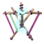
Spirit CallerSummon otherworldly aid. It only costs a drop of your blood...
Zo kom je eraan
- Maken: Galdr Table (niveau 3) uit 8 × Frozen Branch, 5 × Nornathread, 1 ×
 Moose Trophy · per upgrade: 4 × Frozen Branch, 2 × Nornathread
Moose Trophy · per upgrade: 4 × Frozen Branch, 2 × Nornathread - Bereiden: Frost Foundry uit
 Cast: Spirit Caller
Cast: Spirit Caller
 Splitnir
Splitnir
Split your enemies' hearts in two.
Zo kom je eraan
- Maken: Black Forge (niveau 3) uit 10 × Ashwood, 6 × Vlammetaal, 2 × Asksvin Hide, 3 × Bonemaw Tooth · per upgrade: 5 × Ashwood, 6 × Vlammetaal, 1 × Asksvin Hide, 3 × Bonemaw Tooth
Gebruik
- Ingrediënt voor: Splitnir the Bleeding, Splitnir the Primal, Splitnir the Storming
 Splitnir the Bleeding
Splitnir the Bleeding
A small sacrifice must be made for every battle...
Zo kom je eraan
- Maken: Black Forge (niveau 4) uit 1 × Splitnir, 6 × Vlammetaal, 1 × Bloodstone · per upgrade: 6 × Vlammetaal, 1 × Bloodstone
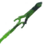
Splitnir the PrimalNature's forces burst through the ground wherever this spear strikes.
Zo kom je eraan
- Maken: Black Forge (niveau 4) uit 1 × Splitnir, 6 × Vlammetaal, 1 × Jade · per upgrade: 6 × Vlammetaal, 1 × Jade
 Splitnir the Storming
Splitnir the Storming
Let the crack of thunder split the air.
Zo kom je eraan
- Maken: Black Forge (niveau 4) uit 1 × Splitnir, 6 × Vlammetaal, 1 × Iolite · per upgrade: 6 × Vlammetaal, 1 × Iolite
 Staff of Embers
Staff of Embers
The sweltering heat of Muspelheim seems almost pathetic when compared to what this staff can do...
Zo kom je eraan
- Maken: Galdr Table uit 20 × Yggdrasil Wood, 4 × Surtlingkern, 16 × Refined Eitr · per upgrade: 10 × Yggdrasil Wood, 2 × Surtlingkern, 8 × Refined Eitr
 Staff of Fracturing
Staff of Fracturing
Only those with patience and focus will be able to harness the true power of this staff.
Zo kom je eraan
- Maken: Galdr Table (niveau 2) uit 15 × Charred Bone, 5 × Ashwood, 8 × Proustite Powder · per upgrade: 5 × Charred Bone, 3 × Ashwood, 1 × Proustite Powder
 Staff of Frost
Staff of Frost
A staff as cold as the three-year winter that will herald the end of times.
Zo kom je eraan
- Maken: Galdr Table uit 20 × Yggdrasil Wood, 4 ×
 Bevriezingsklier, 16 × Refined Eitr · per upgrade: 10 × Yggdrasil Wood, 2 × Bevriezingsklier, 8 × Refined Eitr
Bevriezingsklier, 16 × Refined Eitr · per upgrade: 10 × Yggdrasil Wood, 2 × Bevriezingsklier, 8 × Refined Eitr
 Staff of Protection
Staff of Protection
For a slight blood offering it will protect the caster in a magical shell.
Zo kom je eraan
- Maken: Galdr Table uit 20 × Yggdrasil Wood, 4 ×
 Blood Clot, 16 × Refined Eitr · per upgrade: 10 × Yggdrasil Wood, 2 × Blood Clot, 8 × Refined Eitr
Blood Clot, 16 × Refined Eitr · per upgrade: 10 × Yggdrasil Wood, 2 × Blood Clot, 8 × Refined Eitr
 Staff of the Wild
Staff of the Wild
Ancient natural forces lie curled and dormant within this staff, ready to be unleashed.
Zo kom je eraan
- Maken: Galdr Table (niveau 2) uit 15 × Ashwood, 10 ×
 Fiddlehead, 3 × Celestial Feather, 1 × Jade · per upgrade: 5 × Ashwood, 2 × Fiddlehead, 3 × Celestial Feather, 1 × Jade
Fiddlehead, 3 × Celestial Feather, 1 × Jade · per upgrade: 5 × Ashwood, 2 × Fiddlehead, 3 × Celestial Feather, 1 × Jade
 Stekelvarken
Stekelvarken
Een dodelijk wapen bedekt met gemene stekels.
Zo kom je eraan
 Stenen bijl
Stenen bijl
Een primitieve bijl om bomen mee te vellen.
Zo kom je eraan
 Sticky Fishing Bait
Sticky Fishing Bait
It might smell foul, but the fish drawn to this bait are used to so much worse.
Zo kom je eraan
- Maken: 20 × Food Preparation Table uit 20 × Aas, 1 ×
 Abomination Trophy
Abomination Trophy
Gebruik
- Aas voor: Giant Herring
 Stingy Fishing Bait
Stingy Fishing Bait
You're not immune to deathsquito bites, and the fish here aren't immune to this snack!
Zo kom je eraan
- Maken: 20 × Food Preparation Table uit 20 × Aas, 1 ×
 Loedertrofee
Loedertrofee
Gebruik
- Aas voor: Grouper
 Storm Fang
Storm Fang
Let your arrows fly as swift as the lightning strikes.
Zo kom je eraan
- Maken: Black Forge (niveau 4) uit 1 × Ash Fang, 5 × Vlammetaal, 1 × Iolite · per upgrade: 5 × Vlammetaal, 1 × Iolite
 Storm Ripper
Storm Ripper
The bolts will tear through your enemies like a particularly nasty gale.
Zo kom je eraan
- Maken: Black Forge (niveau 4) uit 1 × Ripper, 8 × Vlammetaal, 1 × Iolite · per upgrade: 8 × Vlammetaal, 1 × Iolite
 Storm Star
Storm Star
Particularly effective on cloudy mornings.
Zo kom je eraan
- Maken: Black Forge (niveau 4) uit 1 × Flametal Mace, 8 × Vlammetaal, 1 × Iolite · per upgrade: 8 × Vlammetaal, 1 × Iolite
 Strijdbijl
Strijdbijl
Schedelsplijter, een genot voor iedere krijger.
Zo kom je eraan
- Maken: Smidse (niveau 2) uit 30 × Oeroude bast, 35 × IJzer, 4 × Leren banden · per upgrade: 5 × Oeroude bast, 15 × IJzer
 Tandspeer
Tandspeer
Zelfs dood vraagt de wolventand om vlees.
Zo kom je eraan
- Maken: Smidse (niveau 3) uit 10 × Oeroude bast, 4 ×
 Wolventand, 2 × Leren banden, 2 × Zilver · per upgrade: 5 × Oeroude bast, 2 × Wolventand, 1 × Leren banden, 1 × Zilver
Wolventand, 2 × Leren banden, 2 × Zilver · per upgrade: 5 × Oeroude bast, 2 × Wolventand, 1 × Leren banden, 1 × Zilver
 Thunderblood Atgeir
Thunderblood Atgeir
The heavens shall sound their praise as you make your enemies bleed.
Zo kom je eraan
- Maken: Black Forge (niveau 4) uit 1 × Nord Atgeir, 20 × Bloodgold, 1 × Thunderblood Essence · per upgrade: 10 × Bloodgold, 1 × Thunderblood Essence
 Thunderblood Axe
Thunderblood Axe
As this axe cuts through wood and blood alike, a resounding thunderous crack shall be heard throughout the land.
Zo kom je eraan
- Maken: Black Forge (niveau 4) uit 1 × Nord Axe, 20 × Bloodgold, 1 × Thunderblood Essence · per upgrade: 10 × Bloodgold, 1 × Thunderblood Essence
 Thunderblood Bow
Thunderblood Bow
Lightning dances along the string, waiting to be unleashed.
Zo kom je eraan
- Maken: Black Forge (niveau 4) uit 1 × Nord Bow, 20 × Bloodgold, 1 × Thunderblood Essence · per upgrade: 10 × Bloodgold, 1 × Thunderblood Essence
 Thunderblood Crossbow
Thunderblood Crossbow
The bow is pulled taut with unreleased power, like the air before a lightning strike.
Zo kom je eraan
- Maken: Black Forge (niveau 4) uit 1 × Nord Crossbow, 20 × Bloodgold, 1 × Thunderblood Essence · per upgrade: 10 × Bloodgold, 1 × Thunderblood Essence
 Thunderblood Dagger
Thunderblood Dagger
The blade is already bloodied, yet it sparks in want of more.
Zo kom je eraan
- Maken: Black Forge (niveau 4) uit 1 × Nord Dagger, 20 × Bloodgold, 1 × Thunderblood Essence · per upgrade: 10 × Bloodgold, 1 × Thunderblood Essence
 Thunderblood Greataxe
Thunderblood Greataxe
As you cleave your foes in two, their blood shall sing like a thunderstorm.
Zo kom je eraan
- Maken: Black Forge (niveau 4) uit 1 × Nord Greataxe, 20 × Bloodgold, 1 × Thunderblood Essence · per upgrade: 10 × Bloodgold, 1 × Thunderblood Essence
 Thunderblood Greatsword
Thunderblood Greatsword
Anyone wielding this weapon is sure to be very frightening indeed.
Zo kom je eraan
- Maken: Black Forge (niveau 4) uit 1 × Nord Greatsword, 20 × Bloodgold, 1 × Thunderblood Essence · per upgrade: 10 × Bloodgold, 1 × Thunderblood Essence
 Thunderblood Knucklechains
Thunderblood Knucklechains
A fury comes over you as you fight with these weapons, your blood roaring like thunder in your ears... It seems appropriate.
Zo kom je eraan
- Maken: Black Forge (niveau 4) uit 1 × Nord Knucklechains, 20 × Bloodgold, 1 × Thunderblood Essence · per upgrade: 10 × Bloodgold, 1 × Thunderblood Essence
 Thunderblood Mace
Thunderblood Mace
A weapon to rival perhaps even that of the thunder god himself...
Zo kom je eraan
- Maken: Black Forge (niveau 4) uit 1 × Nord Mace, 20 × Bloodgold, 1 × Thunderblood Essence · per upgrade: 10 × Bloodgold, 1 × Thunderblood Essence
 Thunderblood Sledge
Thunderblood Sledge
As this weapon strikes true, the blow shall echo throughout the world...
Zo kom je eraan
- Maken: Black Forge (niveau 4) uit 1 × Nord Sledge, 20 × Bloodgold, 1 × Thunderblood Essence · per upgrade: 10 × Bloodgold, 1 × Thunderblood Essence
 Thunderblood Spear
Thunderblood Spear
May it strike like lightning, quick and fierce.
Zo kom je eraan
- Maken: Black Forge (niveau 4) uit 1 × Nord Spear, 20 × Bloodgold, 1 × Thunderblood Essence · per upgrade: 10 × Bloodgold, 1 × Thunderblood Essence
 Thunderblood Sword
Thunderblood Sword
As the blood runs along the blade, it awakens the storm within.
Zo kom je eraan
- Maken: Black Forge (niveau 4) uit 1 × Nord Sword, 20 × Bloodgold, 1 × Thunderblood Essence · per upgrade: 10 × Bloodgold, 1 × Thunderblood Essence
 Thundering Berserkir Axes
Thundering Berserkir Axes
Carnage spreads around you when you wield these axes, such that Thor himself would be proud.
Zo kom je eraan
- Maken: Black Forge (niveau 4) uit 1 × Berserkir Axes, 5 × Vlammetaal, 1 × Iolite · per upgrade: 5 × Vlammetaal, 1 × Iolite
 Toorts
Toorts
Brengt je licht en warmte en houd de duisternis op afstand.
Zo kom je eraan
- Maken: zonder werkbank uit 1 × Hout, 1 × Hars
- Kisten: Steenschip (graf) · 53 % kans, Dorp van het noorden · 53 % kans, Hut (Noorden) · 52 % kans, Houthakkerskamp · 52 % kans, Gevechtsruïne · 50 % kans, Verlaten houten huis · 28–36 % kans, Verlaten boerderij · 36 % kans, Draugr-dorp · 36 % kans
 Trollstav
Trollstav
Summons a raging beast to cause death and destruction.
Zo kom je eraan
- Maken: Galdr Table (niveau 2) uit 15 × Charred Bone, 1 × Troltrofee, 3 × Vlammetaal, 1 × Bloodstone · per upgrade: 5 × Charred Bone, 1 × Troltrofee, 3 × Vlammetaal, 1 × Bloodstone
 Vilebone Maulclaws
Vilebone Maulclaws
These claws will rend flesh and bone alike.
Zo kom je eraan
- Maken: Smidse (niveau 4) uit 2 × Bear Hide, 2 ×
 Vile Ribcage, 2 × Zwart metaal, 4 × Linnen draad · per upgrade: 1 × Bear Hide, 1 × Vile Ribcage, 1 × Zwart metaal, 2 × Linnen draad
Vile Ribcage, 2 × Zwart metaal, 4 × Linnen draad · per upgrade: 1 × Bear Hide, 1 × Vile Ribcage, 1 × Zwart metaal, 2 × Linnen draad
 Vorstner
Vorstner
De doden vrezen zilver. Herinner ze eraan waarom dat is.
Zo kom je eraan
- Maken: Smidse (niveau 3) uit 10 × Oeroude bast, 30 × Zilver, 5 × Ymirvlees, 5 × Bevriezingsklier · per upgrade: 15 × Zilver
 Vorstpijl
Vorstpijl
Een scherf doorborend ijs.
Zo kom je eraan
- Maken: 20 × Werkbank (niveau 4) uit 8 × Hout, 4 × Obsidiaan, 2 × Veren, 1 × Bevriezingsklier
- Kisten: Verlaten blokhut · 5–10 × · 44 % kans, Bergput · 5–10 × · 44 % kans, Torenruïne · 5–10 × · 44 % kans
 Vuurpijl
Vuurpijl
Deze pijl brandt wat hij doorboort.
Zo kom je eraan
- Maken: 20 × Werkbank (niveau 2) uit 8 × Hout, 8 × Hars, 2 × Veren
- Kisten: Steenschip (graf) · 10–15 × · 39 % kans
 Vuurstenen bijl
Vuurstenen bijl
Scherper dan steen.
Zo kom je eraan
- Maken: Werkbank uit 4 × Hout, 6 ×
 Vuursteen · per upgrade: 3 × Vuursteen, 2 × Leren banden
Vuursteen · per upgrade: 3 × Vuursteen, 2 × Leren banden
 Vuurstenen mes
Vuurstenen mes
Scherp vuursteen, een betrouwbaar gereedschap.
Zo kom je eraan
- Maken: Werkbank uit 2 × Hout, 4 × Vuursteen, 2 × Leren banden · per upgrade: 2 × Vuursteen
 Vuurstenen pijl
Vuurstenen pijl
Een huiddoorboorder met een vuurstenen punt.
Zo kom je eraan
- Maken: 20 × Werkbank (niveau 2) uit 8 × Hout, 2 × Vuursteen, 2 × Veren
- Kisten: Gevechtsruïne · 10–20 × · 50 % kans, Torenruïne · 5–10 × · 48 % kans, Ruïne · 5–10 × · 48 % kans, Moerashut · 5–10 × · 48 % kans, Verzonken torenruïne · 5–10 × · 48 % kans, Trollengrot · 5–10 × · 48 % kans, Ruïne van stenen huis · 5–10 × · 48 % kans, Grafkamers (Zwarte Woud) · 5–10 × · 46 % kans, Hildir-quest: Smeulende tombe · 5–10 × · 46 % kans, Verlaten houten huis · 10–20 × · 28–36 % kans, Verlaten boerderij · 10–20 × · 36 % kans, Draugr-dorp · 10–20 × · 36 % kans
 Vuurstenen speer
Vuurstenen speer
Als je met je blik iets de dood belooft, laat je arm dan de boodschapper zijn.
Zo kom je eraan
- Maken: Werkbank uit 5 × Hout, 10 × Vuursteen, 2 × Leren banden · per upgrade: 3 × Hout, 5 × Vuursteen, 1 × Leren banden
 Wooden Atgeir
Wooden Atgeir
It might not hurt a lot, but it has reach!
Zo kom je eraan
- Kisten: Fuling-hut · 17 % kans, Stenen toren (Bergen) · 17 % kans, Ruïne · 17 % kans, Hildir-quest: Verzegelde toren · 17 % kans, Fuling-dorp · 17 % kans
 Wooden Axe
Wooden Axe
If this axe could chop wood, wouldn't that be strange?
Zo kom je eraan
- Kisten: Steenschip (graf) · 8,7 % kans
 Wooden Battleaxe
Wooden Battleaxe
Intimidating, but not as intimidating as the real thing.
Zo kom je eraan
- Kisten: Verlaten blokhut · 10 % kans, Bergput · 10 % kans, Torenruïne · 10 % kans
 Wooden Greatsword
Wooden Greatsword
Would you be careful with that, please?
Zo kom je eraan
- Kisten: Dvergr-wachttoren (ruïne) · 14 % kans, Rotsnaald · 14 % kans, Besmette mijn · 12 % kans
 Wooden Knife
Wooden Knife
Some people would say this knife is better for butter.
Zo kom je eraan
- Kisten: Steenschip (graf) · 8,7 % kans
 Wooden Mace
Wooden Mace
One has to wonder why someone made this instead of a simple club.
Zo kom je eraan
- Kisten: Draugr-dorp · 1–4 × · 32 % kans, Gevechtsruïne · 6 % kans
 Wooden Missile
Wooden Missile
Sturdy wooden missiles that can provide a tough defense against foes.
Zo kom je eraan
 Wooden Sledge
Wooden Sledge
This should probably hurt more than it does.
Zo kom je eraan
- Kisten: Moerasruïne (toren) · 20 % kans, Grafveld · 20 % kans
 Wooden Spear
Wooden Spear
This is just as sharp as a real spear, if a real spear was made out of wood.
Zo kom je eraan
- Kisten: Torenruïne · 11 % kans, Ruïne · 11 % kans, Moerashut · 11 % kans, Verzonken torenruïne · 11 % kans, Trollengrot · 11 % kans, Ruïne van stenen huis · 11 % kans
 Wooden Sword
Wooden Sword
Mostly harmless, unless you're very persistent.
Zo kom je eraan
 Wound Ripper
Wound Ripper
Ready to rend your enemies to pieces.
Zo kom je eraan
- Maken: Black Forge (niveau 4) uit 1 × Ripper, 8 × Vlammetaal, 1 × Bloodstone · per upgrade: 8 × Vlammetaal, 1 × Bloodstone
 Zilveren mes
Zilveren mes
Dat gaat iemand zeker voelen. Au.
Zo kom je eraan
- Maken: Smidse (niveau 3) uit 2 × Hout, 10 × Zilver, 3 × Leren banden, 2 × IJzer · per upgrade: 1 × Hout, 5 × Zilver, 1 × Leren banden, 1 × IJzer
 Zilveren pijl
Zilveren pijl
Een naald die rusteloze geesten doorboort.
Zo kom je eraan
 Zilveren zwaard
Zilveren zwaard
Het puurste metaal, en niets onreins is er tegen bestand.
Zo kom je eraan
- Maken: Smidse (niveau 3) uit 2 × Hout, 40 × Zilver, 3 × Leren banden, 5 × IJzer · per upgrade: 1 × Hout, 20 × Zilver, 1 × Leren banden, 3 × IJzer
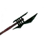
Zwartmetalen atgeirEen brute hakbijl van een bijna onbreekbaar zwart metaal.
Zo kom je eraan
- Maken: Smidse (niveau 4) uit 10 × Fijn hout, 30 × Zwart metaal, 5 × Linnen draad · per upgrade: 15 × Zwart metaal, 5 × Linnen draad
 Zwartmetalen bijl
Zwartmetalen bijl
Een bijl die perfect in balans is, en gesmeed met een duister metaal met een smaragden glans.
Zo kom je eraan
- Maken: Smidse (niveau 4) uit 6 × Fijn hout, 20 × Zwart metaal, 5 × Linnen draad · per upgrade: 10 × Zwart metaal, 5 × Linnen draad
 Zwartmetalen mes
Zwartmetalen mes
Een duister lemmet, sterk en scherp.
Zo kom je eraan
- Maken: Smidse (niveau 4) uit 4 × Fijn hout, 10 × Zwart metaal, 5 × Linnen draad · per upgrade: 4 × Zwart metaal, 5 × Linnen draad
 Zwartmetalen zwaard
Zwartmetalen zwaard
Een ding dat zowel dodelijk als beeldschoon is, en in het licht iets groens heeft.
Zo kom je eraan
- Maken: Smidse (niveau 4) uit 2 × Fijn hout, 20 × Zwart metaal, 5 × Linnen draad · per upgrade: 10 × Zwart metaal, 5 × Linnen draad